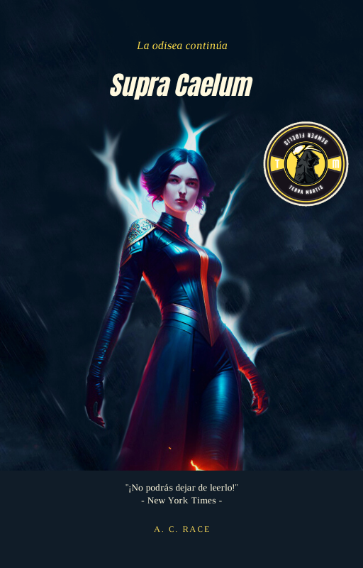

Finis Mare |
En esta primera entrega conocemos a Zeuriel, un caballero que ha tenido que solicitar refugio en las tierras pantanosas y que deberá adaptarse a vivir en un hábitat muy diferente al que está acostumbrado tras la caída del velo mágico y la invasión por parte del ultramundo demoniaco. En su camino conocerá a Lulaby, habitante submarina con capacidades que van más allá de lo que los seres humanos hayan podido jamás imaginar. Juntos deberán enfrentarse a ese mal que asola el planeta y que está a punto de cambiar las tornas en favor de la oscuridad. Mientras se adapta a la vida en las tierras pantanosas, descubre que su nueva comunidad está compuesta por personas con habilidades sobrenaturales que les permiten sobrevivir en un mundo invadido por demonios. Se unirá a ellos en su lucha contra las fuerzas oscuras, pero se da cuenta de que su entrenamiento como caballero no es suficiente para enfrentar a estos seres terroríficos. A medida que la amenaza demoníaca se vuelve cada vez más intensa, Zeuriel y Lulaby se ven obligados a confiar el uno en el otro y a forjar nuevas alianzas, que les llevarán a afrontar difíciles decisiones que pondrán en juego la supervivencia del mundo. Con la ayuda de sus aliados, deberán descubrir los secretos detrás del velo mágico y encontrar una manera de restaurar el equilibrio en un mundo asolado por las fuerzas del mal. |
La aventura continúa y Zeuriel, a su pesar, ha tenido que dejar atrás a Lulaby y volverá a la tierra de los hombres, que ha sido arrasada y que cuando apenas empieza a reconstruirse, recibe otro duro golpe. Sin embargo, en el tablero de juego aparecerá la que todos llaman con temor "La Parca", una hechicera entre humana y demonio, que podrá inclinar la balanza y hacer que haya esperanza para el velo y todos los seres que en su día estuvieron conectados por su mágica red. Zeuriel se une a la hechicera en su lucha, pero pronto descubre que ella no es lo que parece. A medida que profundizan en su plan para detener a los demonios, el guerrero empieza a dudar de sus verdaderas intenciones y se pregunta si realmente puede confiar en ella. Además, la presencia de la hechicera ha llamado la atención de los demonios, lo que hace que la misión sea aún más peligrosa. Los personajes de esta aventura se enfrentarán a desafíos cada vez mayores, desde temibles criaturas hasta traiciones inesperadas. Pero a medida que avancen en su misión, descubren que el verdadero enemigo puede estar más cerca de lo que en un principio imaginaban y que la solución para restaurar la paz no está tan cerca como podía parecer. Aunque las cosas han empezado a cambiar y algunos humanos han conseguido sobrevivir y organizarse, la esperanza es escasa y la supervivencia será la principal preocupación. |
Supra Caelum |
Trailers |
|